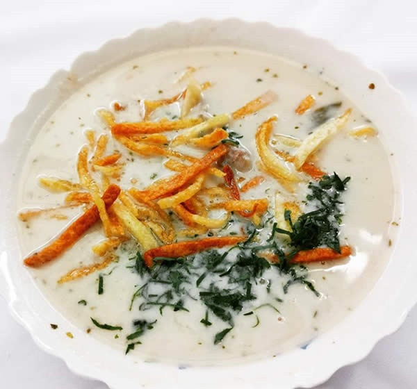

Peanut Soup

Description
This is an amazing soup from Bolivia. It is served with a spicy sauce called llajua.
You can find this food in all the country.
Ingredients
- ½ Kg beef, better if it has some bone
- 1 cup raw peeled peanuts
- 1 white onion peeled and chopped
- 1 carrot cut into cubes
- ½ cup of peeled peas
- 1 diced celery stalk
- ½ diced bell pepper
- 1/4 cup oil
- 1 tablespoon minced garlic
- 1 ½ liters beef or vegetable broth
- 4 potatoes cut into large squares
- salt
- pepper
- cumin
- oregano
- half bag of large noodles
- parsley chopped
- llajwa or spicy sauce
Steps
- In a small pan with 1 tablespoon of oil, fry the peeled peanuts
- Once the peanuts are golden, grind or blend them with a little water.
- In a large pot, add 6 cups of broth and the ground peanuts.
- Add the beef and let it boil.
- In a small frying pan with 3 tablespoons of oil, fry the chopped onion
until slightly brown, add the pepper, oregano, cumin and salt.
- Mix a little and fry for about 2 more minutes and add it to the soup.
- With a wooden spoon, mix and cook for 1 hour.
- Add the noodles, the peas and the potatoes.
- Let boil 20 minutes or until potatoes and peas are cooked.
- Remove from heat and serve sprinkling chopped parsley on top.
Recipe credits and image:
https://gastronomiabolivia.com/sopa-de-mani/